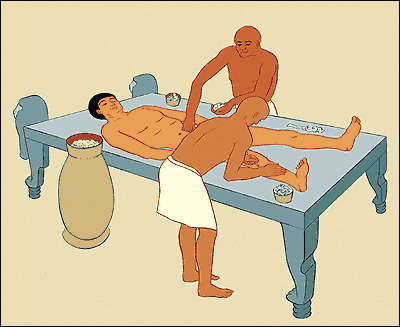
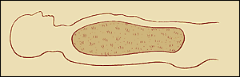

|

The dehydrated internal organs are wrapped in linen and returned to the body. The body is stuffed with dry materials such as sawdust, leaves and linen so that it looks lifelike.

Finally the body is covered again with good-smelling oils. It is now ready to be wrapped in linen.
Next...
|
|